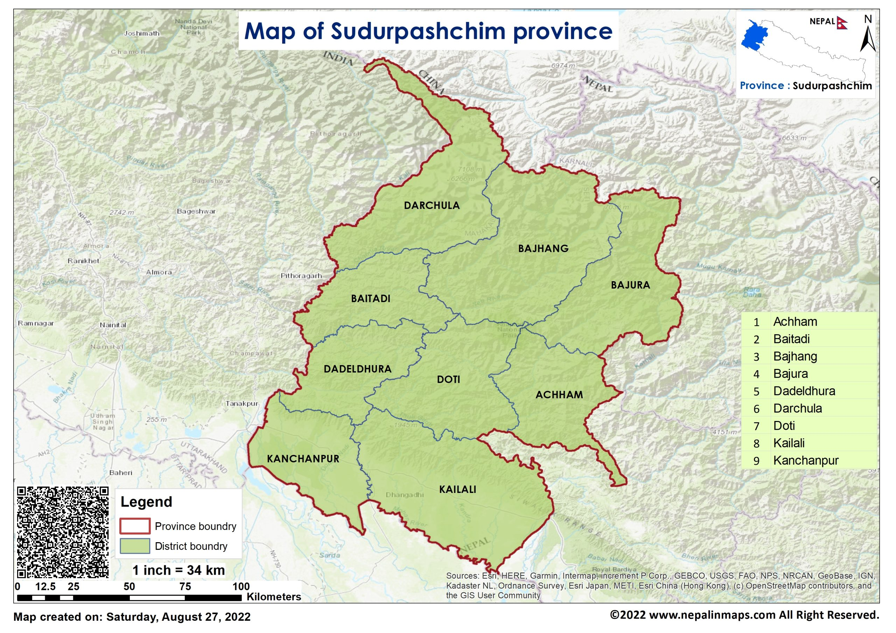

Map

Sudurpashchim Province (Nepali: सुदूरपश्चिम प्रदेश, romanized: Sudūrapaścima pradeśa, lit. 'Far-West Province') is one of the seven provinces established by the new constitution of Nepal which was adopted on 20 September 2015. It borders the Tibet Autonomous Region of China to the north, Karnali Province and Lumbini Province to the east, and India's states of Uttarakhand and Uttar Pradesh to the west and south, respectively. The province covers an area of 19,999.28 km2 (7,721.77 mi2), or about 13.55% of the country's total area.
Initially known as Province No. 7, the newly elected Provincial Assembly adopted Sudurpashchim Province as the permanent name for the province in September 2018. As per a 28 September 2018 Assembly voting, the city of Godawari was declared the capital of the province, but Dhangadhi serves as the temporary capital.The province is coterminous with the former Far-Western Development Region, Nepal. The three major cities in terms of population and economy are Dhangadhi, Bhimdutta (Mahendranagar), and Tikapur